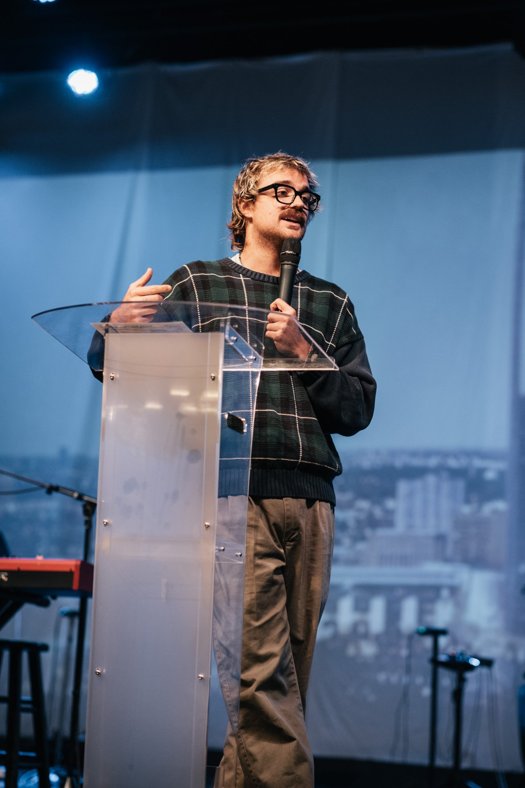

A School of Theology for Homeschool Families
Where Great Ideas Meet the Christian Tradition
A ten-week online theology cohort for Christian homeschool families. Students engage the richest ideas from the Christian tradition through rigorous, accessible, and genuinely engaging instruction.
Apply for the Founding CohortMost programs seek to give your child information; few give formation. The Humanities blends the two, not compromising intellectual rigor for spiritual vitality.
"Your child is already being catechized — by whatever is teaching them, and however it's being taught. The question is: who is that?"
We believe Junior High students benefit most from engaging the Big Ideas — their imaginations are still malleable, their categories still forming. The Fall 2026 founding semester begins with Christian Worldview, teaching students to answer life's biggest questions from within the Christian tradition.
High School students enter a more rigorous, discussion-driven program built around debate, original research, and theological argument. The Fall 2026 founding semester launches with Old & New Testament — learning to read Scripture not just to understand it, but to obey it.
High school juniors and seniors may apply to The Monastery — a spiritual formation cohort designed for two kinds of students: those already hungry for more of God, and those whose parents believe they're ready to take their faith seriously, even if they don't know it yet.
Church History traces the story of the Church from Acts through the Church Fathers, the Medieval period, the Reformation, and into the Modern era — teaching students that they are not the first Christians, and that the faith they have inherited was paid for dearly.
Systematic Theology takes the Big Ideas and puts them into language junior highers can actually own. Students work through the essential doctrines of the Christian faith through the fourfold lens of Bible, Tradition, Reason, and Experience — not as abstract concepts, but as the grammar of a life with God.
Christian Worldview teaches students to ask the questions every human being is already asking — and to answer them from within the Christian tradition. Concepts include the fundamental categories of a coherent and distinctly Christian vision of reality.
The Bible courses are built on a single conviction: Scripture is not a museum or a textbook — it is living speech from the mouth of God. Students learn to read it in its historical and literary context, to interpret it carefully, and ultimately to live inside it. We teach the Bible not just to be understood, but to be obeyed.
Christian Philosophy engages the Three Transcendentals — Truth, Goodness, and Beauty — as the fundamental framework for a Christian worldview. Students read deeply from the great books of the Christian tradition and the Western canon, learning to think Christianly about culture rather than being absorbed by it.
Apologetics prepares students for the real conversations they are already having. Topics include the existence of God, the reliability of Scripture, abortion, and the Bible's teaching on slavery — some of the most contested questions of our time.
Expect papers. Expect debates. Expect to be ready.
The Monastery is a spiritual formation cohort modeled after John Wesley's Holy Club. Students craft a personal monastic rule, committing to Scripture reading, prayer, and active participation in the life of the Church. Drawing from the devotional classics of the Christian tradition, students are formed not through assignments but through habits, accountability, and the slow work of grace.
No papers. No debates. Just a corporate catapult into union with Christ.
$1,800 per student for the complete academic year — two ten-week semesters beginning in the fall.
Three installments of $600. No student will be turned away for financial need.
Included in High School tuition at no additional cost. Admission is by application only.
Founding families who continue into the full program are grandfathered into the standard annual rate. A limited number of scholarships are available — contact us to apply.
What tradition or denomination is The Humanities?
The Humanities is not affiliated with any single denomination. Our curriculum draws from the whole of the Christian tradition — Catholic, Protestant, Orthodox, and Wesleyan voices all have a seat at the table. Students from non-denominational, Catholic, Baptist, Methodist, and Reformed backgrounds have all found a home here. We are committed to what C.S. Lewis called "mere Christianity" — the great faith held by believers across centuries and traditions.
Will this count toward my child's transcript?
Yes. Each course is structured around Carnegie Unit standards and can be documented on your child's homeschool transcript. We provide detailed course descriptions, syllabi, and completion records for every student.
Is instruction live or recorded?
Courses are taught live online in small cohorts. This is intentional — the discussion, debate, and relationship between students is as important as the content itself. Sessions are recorded and available to enrolled students, but we ask that students attend live whenever possible. The conversation is the course.
How much time does it require per week?
Students should expect one live session per week plus two to three hours of reading and assignments outside of class.
When does the inaugural semester start?
The founding cohort launches fall 2026. Enrollment is limited — apply early.
What if my student misses a class?
Sessions are recorded and available to enrolled students. We ask that students attend live whenever possible — the conversation is the course.
How do I enroll?
Fill out the interest form below. We will follow up within 48 hours.

But who is teaching these courses?
Jordan SoutherlandJordan Southerland has been teaching theology to students since he was 19 years old. What started in youth ministry became a vocation — and eventually a master's degree in Theological Studies from Theos Seminary, where he also served as a Graduate Assistant.
Jordan's teaching draws from the deep wells of the Christian tradition — Boethius, Kierkegaard, Wesley, Kreeft, Ravenhill — and brings them into conversation with the questions students are actually living. His style is intellectually rigorous without being dry, and genuinely entertaining without being shallow.
He believes the greatest ideas in human history belong in the hands of young people — and that no one is too young to think seriously about God.
The Humanities is his attempt to prove it.